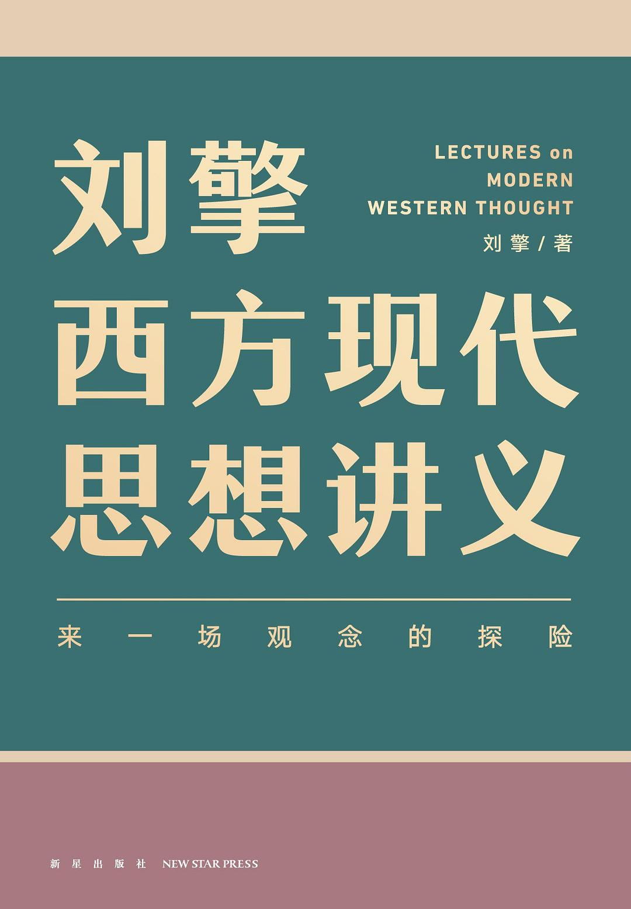

《刘擎西方现代思想讲义》

总体观点
华东师范大学政治哲学教授刘擎，以平易近人而极具穿透力的思想导读，系统梳理了过去一百多年塑造现代人心灵与制度的西方现代思想脉络。
核心命题：现代人在享受科技繁荣与个人自由的同时，普遍陷入了意义丧失、价值虚无与原子化孤独的“现代性危机”。理解思想史不是背诵教条，而是借助思想大师的智力火炬照亮当下真实的生存困惑。
本书引导读者摆脱非黑即白的简单教条，学会直面现代世界的复杂性、多元性与悲剧性张力，在祛魅的世界上建立有反思自省能力的成熟心智。
核心观点
-
1. 现代世界的“祛魅”让奇迹隐退，但带来了意义丧失与终极虚无
科学理性破除了神灵迷信，解释了世界“如何运转”，却彻底回答不了人“为什么活着”的终极价值问题。
马克斯·韦伯指出，现代人失去了古代宗教提供的现成生命意义，必须在冷酷客观的物理世界中自己承担赋予生命意义的重任。 -
2. 工具理性压倒价值理性是现代社会普遍内耗异化的病根
我们追求KPI、效率与收益手段的技术越来越精密，但对生活终极目的与崇高价值的思考却陷入了麻木空洞。
现代职场人像精密钟表齿轮一样疯狂加班冲刺绩效指标（工具理性高效），深夜独处时却困惑自己到底为什么如此疲惫（价值理性失落）。 -
3. 尼采高呼“上帝死了”并非欢呼胜利，而是吹响直面虚无的号角
失去了至高神圣标准的锚定，人类面临前所未有的精神深渊，唯有敢于重塑自身生命意义的“超人”才能获得救赎。
尼采告诫我们：不要做随波逐流、追求平庸舒适的“末人”，而要勇敢直面虚无，如艺术家般在生活的痛苦废墟上创造自己的价值。 -
4. 自由不是随心所欲的放纵，而是一份无法推卸的沉重道德负担
萨特的存在主义宣告“存在先于本质”，人没有既定的神圣蓝图指引，每一个具体选择都在定义你自己，且你必须负全责。
面对就业还是考研的选择，没有人能替你背书；你选择什么就成为什么样的人，自由的沉重在于无法将失败推脱给命运或他人。 -
5. “平庸之恶”警示我们放弃独立反思就是制度作恶的平庸帮凶
阿伦特在审判纳粹战犯艾希曼时发现，极大的恶不一定来自穷凶极恶的动机，往往源于官僚齿轮放弃思考、盲从命令的平庸。
艾希曼在法庭上坚称自己只是忠于职守、按规程盖章调度火车，但正是这种丧失道德反思能力的尽职，将数百万犹太人送入毒气室。 -
6. 警惕以崇高乌托邦名义推行的全能主义宏大社会工程
波普尔与哈耶克提醒我们：人类理性充满无知与局限，试图用全盘设计的宏大蓝图建造人间天堂，往往直接通往人间地狱。
哈耶克批评计划经济中“理性的自负”，指出无数分散个体的市场自发秩序远比中央计划委员会自以为是的统管更具生命力与创造力。 -
7. 价值多元论承认人类美好价值之间存在不可调和的悲剧性冲突
以赛亚·伯林指出自由、平等、正义与慈悲都是崇高的善，但它们往往无法同时两全，现代社会需要的是宽容与审慎权衡。
绝对的自由可能导致弱肉强食的不平等，而激进的平等往往需要剥夺个人自由；成熟的现代政治必须在两者间寻求脆弱的妥协。 -
8. “无知之幕”构想了公平正义的制度底线：优先关照最不利群体
罗尔斯提出正义论思想实验：在不知道自己未来出身贫富、智力天赋的前提下，理性人一定会选择最大限度保障弱者利益的制度。
假设你不知道切蛋糕的人最后拿哪一块，切蛋糕的人一定会拼尽全力把每一块都切得绝对均匀，这就是正义原则的直观体现。
全书思维导图 · 知识脉络树
全书结构
-
第一章 现代思想的成年
以马克斯·韦伯为思想路标，解析现代世界的祛魅、诸神之争、工具理性膨胀与现代铁笼的铸就。
现代人在职场中像精密齿轮一样追求KPI与效率最大化（工具理性），却在夜深人静时陷入“人活着究竟为了什么”的终极意义虚无（价值理性失落）。 -
第二章 现代人的精神危机
跟随尼采、弗洛伊德与萨特，直面“上帝之死”后的虚无深渊、无意识本能冲动与存在主义绝对自由的沉重负担。
萨特在二战抵抗运动中指出，没有既定的神圣蓝图规定人该怎么活，人被判定为自由，每一个具体选择都在定义自己的生命本质。 -
第三章 20世纪的教训
反思极权主义与大屠杀灾难，汇聚鲍曼、阿伦特、波普尔、哈耶克、伯林与马尔库塞的制度警示与思想批判。
阿伦特旁听艾希曼审判提出“平庸之恶”，揭露纳粹官僚并非穷凶极恶的恶魔，而是放弃独立思考与道德判断、机械执行命令的平庸之辈。 -
第四章 自由主义及其批判者
聚焦正义、平等与社群认同大论战，呈现罗尔斯、诺齐克、德沃金、桑德尔、沃尔泽、泰勒与哈贝马斯的思想交锋。
罗尔斯提出“无知之幕”思想实验：假设所有人都不清楚自己在社会中的阶层、智力和财富天赋，唯有此时制定的利益分配规则才是真正公正的。 -
尾声 后冷战时代的争论
检视冷战结束后的世界政治走向，剖析福山历史终结论的遭遇、亨廷顿文明冲突论的预警与全球化新转折。
对比福山对自由民主制度终极胜利的乐观预言，与亨廷顿准确预见不同宗教文明传统断裂带上将爆发激烈冲突的地缘现实。